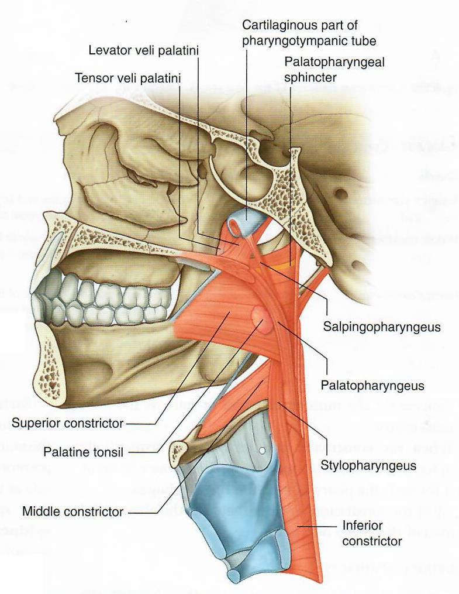

GAS1 Lab 3: Oral Cavity
OBJECTIVES:GAS1.3.1 Describe the boundaries of the oral cavity and oropharynx. GAS1.3.2 Identify the components of the oropharynx. GAS1.3.3 Identify the muscles of the oral cavity. GAS1.3.4 Identify the muscles of the tongue. GAS1.3.6 Identify the salivary glands. |
READINGS:Moore (Eighth Edition): Clinically Oriented Anatomy Pages: 937-959, 1043-1044 |
Oral Cavity: Module 1 - Page 1 of 6
| Begin with a head cross section. |
|  |
| 🔍 Nasopharyngeal Muscles |
| Add the palatopharyngeus muscle. |
| Add the stylopharyngeus muscle. |
| Add the salpingopharyngeus muscle. |
| Add the palatoglossus muscle. |
What is the function of these muscles? |
|
|
The palatopharyngeus, salpingopharyngeus and stylopharyngeus elevate the soft palate and effectively close the nasopharynx. The palatoglossus elevates the back of the tongue. All but the stylopharyngeus are innervated by CN X. The stylopharyngeus is innervated by CN IX. |
|
| Add the the oropharyngeal space which is enclosed by all these muscles and the constrictors. |